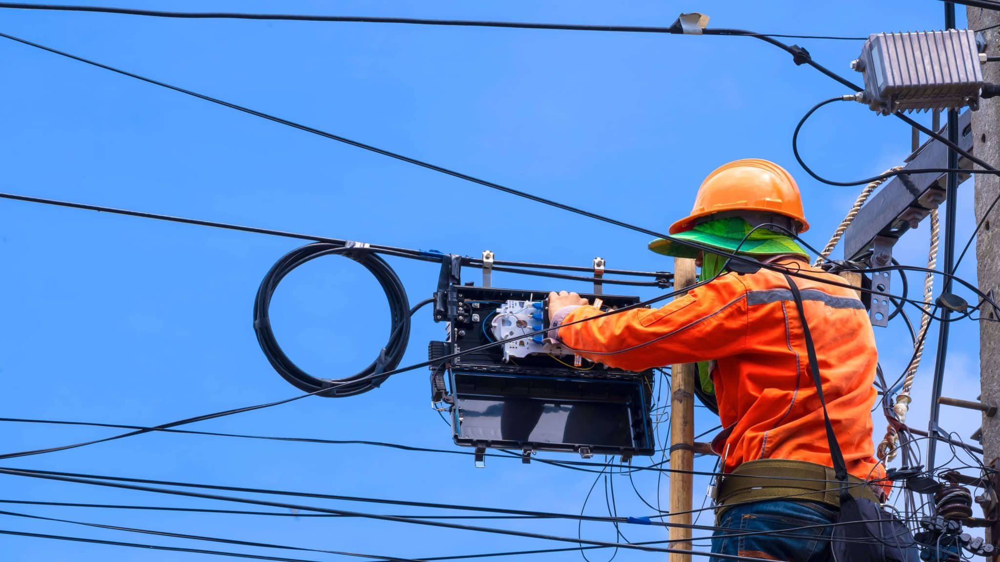

E a última experiência foi como instalador de internet, onde meu trabalho já não era tanto na área de atendimento e sim na parte de instalação, indo na rua e subindo em poste para puxar cabo de fibra óptica. Trabalhei por um bom tempo, fazendo instalações sozinho e indo resolver conflitos de cabo arrebentado ou de mal funcionamento na rede.
